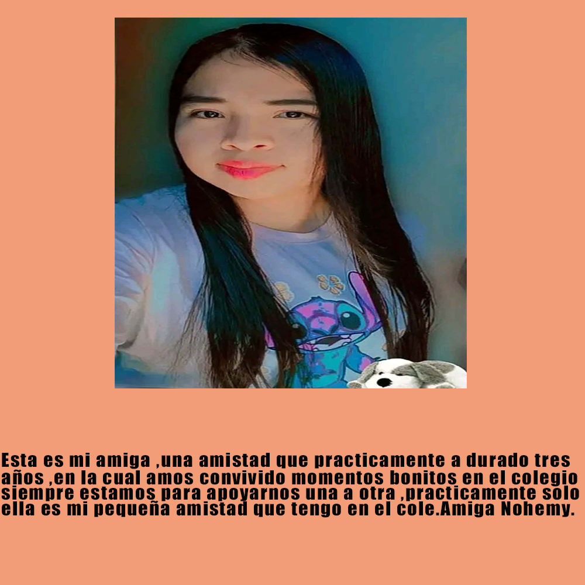
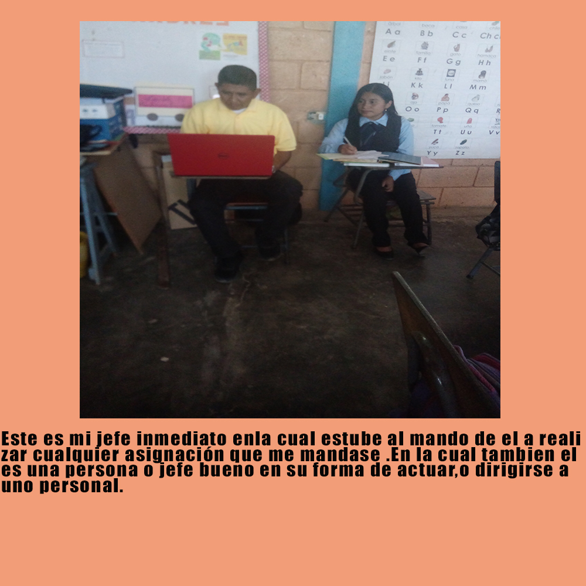

III BTP en Informática
Amistad
Actividades
Trabajos informáticos

Jefe Inmediato
Licenciado Santos Hernán García
¿En qué consiste mi Práctica? Mi practica consiste en desarrollar todas mis habilidades aprendidas durante todo el proceso educativo del año. nosotros como alumnos demostrarnos nuestra capacidad , aprender a realizar trabajos en un ambiente laboral, en como una empresa o institucion funciona.Además uno ba a aprender mas conocimienos o conocer diferentes personas a nuestro entoro.Otra es porque tambien consiste en realizarlo, ya que es un requisito para poder graduarse dictada x la ley educativa,para asi resibir el titulo profesional.